一、材料( 每题参考分值5分 )
1、假设某航空公司规定，乘客可以免费托运重量不超过30kg的行李。当行李重量超过30kg时，对头等舱的国内乘客超重部分每公斤收费4元，对其他舱的国内乘客超重部分每公斤收费6元，对外国乘客超重部分每公斤收费比国内乘客多一倍，对残疾乘客超重部分每公斤收费比正常乘客少一半。
请用结构化语言、判定表和判定树中的一种描述上述问题。
程序语言可以用任意的语言如C、Basic、伪代码、自然语言等，也可以用判定表和判定树，只要描述能正确表达题目的意思即可。
下面是用判定表来描述：
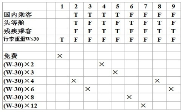
2、某工厂对工人的超产奖励政策为：该厂生产两种产品A和B。凡工人每月的实际生产量超过计划指标者均有奖励。奖励政策为：
对于产品A的生产者，超产数N小于或等于100件时，都按超产100件算每件奖励2元；N大于100件小于等于150件时，大于100件的部分每件奖励2.5元，其余的每件奖励金额不变；N大于150件时，超过150件的部分每件奖励3元，其余按超产150件以内的方案处理。
对于产品B的生产者，超产数N小于或等于50件时，都按超产50件算，每件奖励3元；N大于50件小于等于100件时，大于50件的部分每件奖励4元，其余的每件奖励金额不变；N大于100件时，超过100件的部分每件奖励5元，其余按超产100件以内的方案处理。
请用结构化语言、判定表和判定树中的一种描述上述问题。
程序语言可以用任意的语言如C、Basic、伪代码、自然语言等，也可以用判定表和判定树，只要描述能正确表达题目的意思即可。
下面是用判定树来描述：
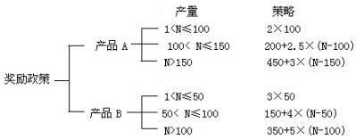
3、某厂对部分职工重新分配工作的政策是：年龄在20岁以下者，初中文化程度脱产学习，高中文化程度当电工；年龄在20岁至40岁之间者，中学文化程度男性当钳工，女性当车工，大学文化程度都当技术员；年龄在40岁以上者，中学文化程度当材料员，大学文化程度当技术员。
请用结构化语言、判定表和判定树中的一种描述上述问题。
程序语言可以用任意的语言如C、Basic、伪代码、自然语言等，也可以用判定表和判定树，只要描述能正确表达题目的意思即可。
结构化语言描述：
CASE 年龄<20
CASE 文化程度 初中
分配工种 脱产学习
CASE 文化程度 高中
分配工种 电工
ENDCASE
CASE 年龄<=40.AND.>=20
CASE 文化程度 初中.OR.高中
CASE 性别 男
分配工种 钳工
CASE 性别 女
分配工种 车工
ENDCASE
ENDCASE
CASE 文化程度 大学
分配工种 技术员
ENDCASE
ENDCASE
CASE 年龄>40
CASE 文化程度 初中.OR.高中
分配工种 材料员
CASE 文化程度 大学
分配工种 技术员
ENDCASE
ENDCASE
判定表描述：
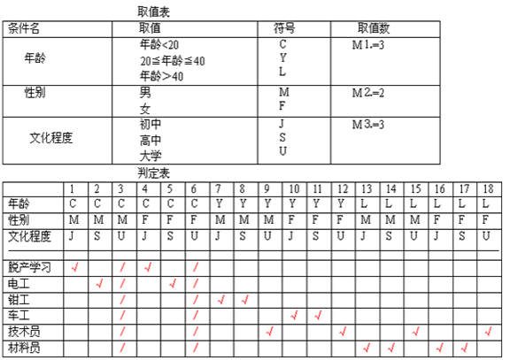
判定树描述：
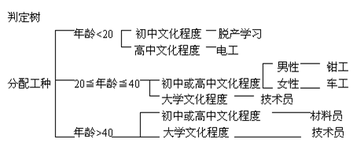
4、加工逻辑描述为，如果申请者的年龄在21岁以下，要额外收费；如果申请者是21岁以上并是26岁以下的女性，适用于A类保险；如果申请者是26岁以下的已婚男性，或者是26岁以上的男性，适用于B类保险；如果申请者是21岁以下的女性或是26岁以下的单身C类保险。附此之外的其他申请者都适用于A类保险。
请用结构化语言、判定表和判定树中的一种描述上述问题。
程序语言可以用任意的语言如C、Basic、伪代码、自然语言等，也可以用判定表和判定树，只要描述能正确表达题目的意思即可。
下面是用判定表来描述：
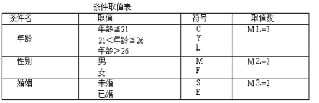
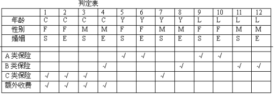
5、某校制定了教师的讲课课时津贴标准。对于各种性质的讲座，无论教师是什么职称，每课时津贴费一律是50元；而对于一般的授课，则根据教师的职称来决定每课时津贴费：教授40元，副教授35元，讲师30元，助教25元。
请用结构化语言、判定表和判定树中的一种描述上述问题。
程序语言可以用任意的语言如C、Basic、伪代码、自然语言等，也可以用判定表。
判定树表示如下：
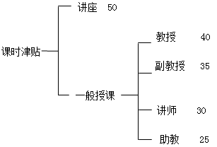
6、公司为本科以上学历的员工重新安排工作，原则如下：
①如果年龄不满23岁，学历是本科，一律考研生；
②如果年龄在23岁至50岁之间，学历本科，任项目经理；
③如果年龄在50岁以下，学历硕士，任命为中层领导；
④如果年龄超过50岁，不做调整，要求画出判定表。
请用结构化语言、判定表和判定树中的一种描述上述问题。
程序语言可以用任意的语言如C、Basic、伪代码、自然语言等，也可以用判定表和判定树，只要描述能正确表达题目的意思即可。
下面是用判定表来描述：
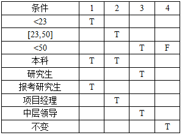
二、案例分析( 每题参考分值5分 )
7、请结合等价类方法给出getNumDayslnMonth(int month, int year) 方法的测试用例，其中getNumDaysInMonth方法根据给定的月份和年份返回该月份的总天数。
设计类题目，答案不唯一。参考答案如下：
月的等价类: ① 31天的月份; ② 30天的月份; ③ 2月
年的等价类: ① 闰年； ② 非闰年
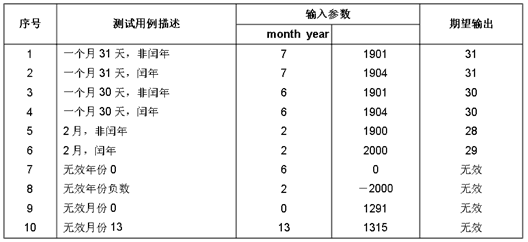
8、有程序段结构如下图所示，请设计该程序段的语句覆盖、判断覆盖和条件覆盖的测试用例。
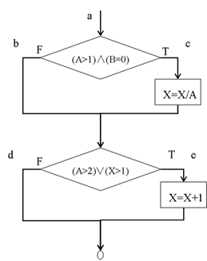
设计类题目，答案不唯一。
可行的参考答案如下：
语句覆盖：
Testcase1：Input: A=3, B=0, X=3
Output: X=2 …………… 覆盖路径: ace
判断覆盖：
Testcase1：Input: A=3, B=0, X=3
Output: X=2 …………… 覆盖路径: ace
Testcase2：Input: A=0, B=0, X=1
Output: X=1 …………… 覆盖路径: abd
条件覆盖：
判定条件取值为：1. A>1 取真 2. A>1 取假
3. B=0 取真 4. B=0 取假
5. X>1 取真 6. X>1 取假
7. A>2 取真 8. A>2 取假
Testcase1：Input: A=3, B=0, X=3
Output: X=2 …………… 覆盖判定条件: 1，3 ，5，7
Testcase2：Input: A=1, B=3, X=0
Output: X=2 …………… 覆盖判定条件: 2，4 ，6，8
9、图书管理系统功能性需求说明如下:
l 图书管理系统能够为一定数量的借阅者提供服务。每个借阅者能够拥有唯一标识其存在的编号。图书馆向每一个借阅者发放图书证，其中包含每一个借阅者的编号和个人信息。提供的服务包括：提供查询图书信息、查询个人信息服务和预定图书服务等。
l 当借阅者需要借阅图书、归还书籍时需要通过图书管理员进行，即借阅者不直接与系统交互，而是通过图书管理员充当借阅者的代理和系统交互。
l 系统管理员主要负责系统的管理维护工作，包括对图书、数目、借阅者的添加、删除和修改。并且能够查询借阅者、图书和图书管理员的信息。
l 可以通过图书的名称或图书的ISBN/ISSN号对图书进行查找。
根据上述图书管理系统的需求说明，回答下列问题：
（1）该系统中有哪些参与者?
（2）确定该系统中的类，找出类之间的关系并画出类图。
（3）画出 “借阅者预定图书”的顺序图。
（1） 该系统的参与者有：借阅者、图书管理员、系统管理员
（2） 该系统中的类包括：用户类、用户角色类、图书类、预定类、借阅类、书目类
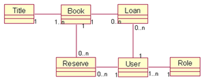
（3） “借阅者预定图书”的顺序图如下：
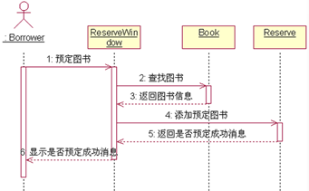
10、随意选择一个物品（如水杯、电梯等），根据所学的软件测试技术、方法和内容对其进行测试。
测试项目: 杯子
需求测试: 查看杯子使用说明书
界面测试: 查看杯子外观
功能性: 用水杯装水看漏不漏; 水能不能被喝到
安全性: 杯子有没有毒或细菌
可移植性: 杯子在不同的地方、温度等环境下是否都可以正常使用
兼容性: 杯子是否能够容纳果汁、白水、酒精、汽油等
易用性: 杯子是否烫手、是否有防滑措施、是否方便饮用
用户文档: 使用手册是否对杯子的用法、限制、使用条件等有详细描述
疲劳测试: 例如，将杯子盛上水，放24小时检查泄漏时间和情况；或者杯中盛上汽油，放24小时检查泄漏时间和情况等
压力测试: 用一根针并在针上面不断加重量，看压强多大时会穿透杯子
跌落测试: 杯子加包装(有填充物)，在多高的情况摔下不破损.
震动测试: 杯子加包装(有填充物)，六面震动，检查产品是否能应对恶劣的铁路\公路\航空运输
测试技术与方法: 黑盒测试，包括场景法、等价类划分法、因果图法、错误推测法、边界值法等
测试数据: 根据以上测试内容，编写具体测试数据。
期望输出:该期望输出需查阅国家标准、行业标准以及用户的需求。
三、单选( 每题参考分值2.5分 )
11、软件测试的目的是（ ）。
错误:【C】
12、指出PDL是下列哪种语言（ ）。
错误:【A】
13、结构化程序设计主要强调的是（ ）
错误:【D】
14、瀑布模型的存在问题是（ ）
错误:【B】
15、在进行软件测试时， 首先应当进行（ ），然后再进行组装测试，最后再进行有效性测试。
错误:【A】
16、在软件设计中应该保持模块的独立性原则，（ ）反映模块独立性。
错误:【A】
17、为了提高模块的独立性，模块内部最差是（ ）
错误:【C】
18、指出PDL是下列哪种语言（ ）。
错误:【D】
19、在详细设计阶段，经常采用的工具有（ ）
错误:【A】
20、下面关于详细设计的叙述中，错误的是（ ）
错误:【B】
21、IDEF图反映系统（ ）
错误:【D】
22、软件测试工作本身很复杂，其工作量要占软件开发总工作量的（ ）
错误:【A】
23、UML语言的UseCase图中，用例是表示所建模系统的一项外部（ ）
错误:【C】
24、划分软件生存周期的阶段时所应遵循的基本原则是（ ）。
错误:【B】
25、为了提高模块的独立性，模块内部最差是（ ）
错误:【A】
26、软件复杂性度量的参数包括（ ）
错误:【B】
27、在对数据流的分析中，主要是找到中心变换，这是从（ ）导出结构图的关键。
错误:【A】
28、下列不属于软件结构图的形态特征的是（ ）
错误:【B】
29、以下哪种测试方法不属于黑盒测试技术（ ）
错误:【C】
30、在图书馆信息管理系统中，已经构造了一个读者类，后来发现图书馆的学生和教师在借书中有不同要求。请问在面向对象设计中用（ ）方法可以有效地设计这3个类？
错误:【D】
31、可行性研究实质上是在较高层次上、以较抽象的方式进行（ ）的过程。
错误:【B】
32、（ ）反映了系统物理结构。
错误:【D】
33、第一个体现结构化编程思想的程序设计语言是（ ）
错误:【B】
34、软件工程管理对软件项目的开发管理，即对整个软件（ ）的一切活动的管理。
错误:【D】
35、不属于软件项目管理的是（ ）。
错误:【D】
36、在软件生命周期中，确定系统必须做什么和必须具备哪些功能的阶段是（ ）。
错误:【D】
37、软件设计的主要任务是解决系统（ ）的问题。
错误:【C】
38、面向对象分析过程中建立的模型有（ ）。
错误:【D】
39、系统定义明确之后，应对系统的可行性进行研究。可行性研究应包括（ ）。
错误:【A】
40、下列说法错误的是（ ）
错误:【D】
41、下列说法错误的是（ ）
错误:【D】
42、在结构测试用例设计中，有语句覆盖、判定覆盖、路径覆盖等，其中（ ）是最强的覆盖准则。
错误:【B】
43、一个测试用例是（ ）。
错误:【C】
44、软件测试方法中的静态测试方法之一为（ ）
错误:【A】
45、因计算机硬件和软件环境的变化而作出的修改软件的过程称为（ ）
错误:【B】
46、软件需求分析的主要任务是准确定义所开发的软件系统是 （ ）
错误:【C】
47、下面的（ ）不是单元测试原则。
错误:【B】
48、获取软件系统需求不包括以下的（ ）来源。
错误:【B】
49、面向数据结构的设计方法（Jackson方法）是进行（ ）的形式化的方法。
错误:【B】
50、检查软件产品是否符合需求定义的过程称为（ ）
错误:【A】